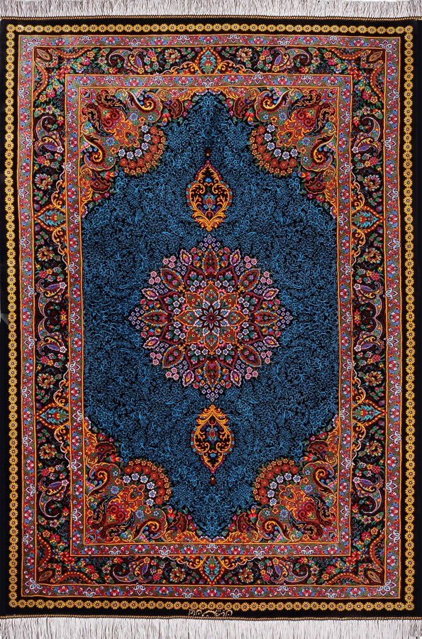

A LITTLE COLOUR. A DIFFERENT FEELING.
Your room.
Its next companion.
Find a rug that speaks the same colour language as your home. One room photo. Five real catalog pieces. Reasons you can see.
Explore your room →Private by design · No account · No API charges

01 / YOUR SPACE
Start with the room you have.
Let your room set the palette.
Choose a photo with the walls, furniture and floor visible.
Your photo stays in this browser. Refresh clears it.
03 / YOUR SHORTLIST
Different rugs. Clear reasons.
Add a room photo or try the sample to see your top matches.
What does the design score mean?
It is a transparent ranking heuristic, not a probability or professional assessment. Blend uses average RGB palette similarity across your three chosen colours. Contrast combines 65% similarity with 35% light/dark contrast against the floor. A specific pattern preference contributes 20 points, with colour contributing 80. With no pattern preference, colour alone contributes 100. The dimension filter is a hard limit; scores do not measure physical fit. Lighting, screens and silk sheen can change perceived colours.
04 / LOOK A LITTLE CLOSER
Your side-by-side selection.
Select up to three recommended rugs to compare.
THE SOURCE COLLECTION
Five pieces. Many possibilities.
Thoughtful choices,
honest limits.
This tool compares colour and stated preferences. It does not recognize furniture styles, measure your room or guarantee a perfect match. Confirm dimensions and physical colours before choosing a rug.
Product facts come from the owner's catalog. Colour swatches and open/dense labels are editorial annotations. Sources & image rights · How this project grows